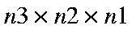
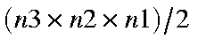

Next: Generation of Band Structures Up: Program MAKPOL Previous: Program MAKPOL
Any of the keywords used by MOPAC can be used in a MAKPOL data set, but, only a few keywords will be used by MAKPOL: the rest will be ignored. Keywords that are used in MAKPOL are given below.
- BCC
When BCC is added (Body Centered Cubic), all odd unit cells are omitted. An odd unit cell is one for which the addition of the cell indices results in an odd number, thus (0,0,0) and (1,1,0) would be allowed, but (1,1,1) and (2,1,0) would not. Diamond is an example of a BCC solid.
DEBUG
Print diagnostic data on how MAKPOL is working. This is not a particularly useful keyword--do not use it for routine work.
LET
By default, when SORT is not used, all atoms in the fundamental unit cell will be placed inside the boundaries of the unit cell. Any atoms that were outside the boundaries will be translated inside the unit cell. This is necessary for the band structure calculation (in BZ). If you do not want the atoms to be moved, add LET.
MERS=(n3,n2,n1)
The number of unit cells in each direction is defined by n3, n2, and n1. The total number of unit cells generated will be , or, if BCC is used, .
SORT
The default order of atoms in a cluster is as follows: all atoms in the first unit cell, all atoms in the second unit cell, etc. An alternative order can be requested by adding SORT. In this case, the order of occurrence is: atom one in all the unit cells, atom two in all unit cells, atom three, etc. The choice of which order to use depends on the purpose for which the cluster data set will be used.
For geometry optimizations, SORT is useful, particularly when used with SYMMETRY.
For band structure calculations, SORT should not be used--these calculations require the default order of atoms. To emphasize this point, if SORT is specified, then the keyword MERS will be deleted from the resulting data set.
SYMMETRY
This keyword has two distinct functions. When SYMMETRY is specified, then any symmetry data present in the input data set will be used. This is useful for reducing the number of variables that need to be changed on going from one system to another (for example, on going from diamond to cubic boron nitride). If no symmetry data are present, then this function will not be used.
The second function of SYMMETRY is to impose symmetry conditions on the resulting cluster data set. Only four symmetry conditions are recognized: bond-lengths that are equal, bond angles that are equal, equal dihedral angles, and dihedral angles that are the negative of reference dihedrals.
For high symmetry systems, the cluster data set should be edited to increase the symmetry. For example, in diamond, all angles and dihedrals are symmetry defined, so all the optimization flags for these variables should be set to zero, and all symmetry functions involving angles and dihedrals should be deleted. In addition, all "bond lengths" in diamond are simple multiples of the fundamental C-C distance, so extra symmetry functions (involving function 19) should be added. If this is done correctly, then only one geometric variable will be left.
A test-example of the MAKPOL input-data for diamond is given in the Figure.
Figure:
Data set for Diamond for MAKPOL
|
bcc mers=(4,4,4)
Diamond, 64 atoms
c
xx 0.785065 1
c 0.785065 0 180 0 0 0 1
xx 1.0000000 0 54.73561 0 0 0 1 2 3
xx 1.0000000 0 54.73561 0 120 0 1 2 4
xx 1.0000000 0 54.73561 0 240 0 1 2 4
TV 1.8130299 1 0.0 0 0 0 1 4 2
TV 1.8130299 1 0.0 0 0 0 1 5 2
TV 1.8130299 1 0.0 0 0 0 1 6 2 |
Next: Generation of Band Structures Up: Program MAKPOL Previous: Program MAKPOL
J. J. P. Stewart
Fujitsu Ltd. 2001